Your attempt to destroy our family in 2010 was unsuccessful. Fifteen years later, the Reich Family still exists. (Photorealistic Rendering Designed by Reich / Original Photo by Alexander)
Your attempt to destroy our family in 2010 was unsuccessful. Fifteen years later, the Reich Family still exists. (Photorealistic Rendering Designed by Reich / Original Photo by Alexander)
Your attempt to destroy our family in 2010 was unsuccessful. Fifteen years later, the Reich Family still exists. (Photorealistic Rendering Designed by Reich / Original Photo by Alexander)
Our Family Still Exists
Fifteen Years Later
In 2010, a nineteen year old San Francisco girl interviewed with mainstream media for two months stating that I was the leader of a sex cult. Her account was filled with stories of the sexual abuse of little girls and a death squad that would kill on my command. My family is diametrically opposed to every aspect of that accusation which was made by a person who was never a member of our family and was never in our presence to witness a single thing she accused our family of doing. The very notion that we sexually abuse our children is repulsive to us and violates everything that we stand for and believe in. Our children and teens are highly valued and protected. Our focus is not on little girls, teenage girls, or any one member or small group in our family. Each member of our family is equally valued, loved, and respected.
In the 2010 attack, my family and I were compared in the media to Jim Jones and the Peoples Temple as well as Charles Manson and the Manson Family. I have gone into great depth about Jim Jones and his followers in the article Tale of Two Cults. Over 930 people followed Jim Jones to the ends of the earth. This included 909 members who died in Jonestown; 4 members who died at the house in Georgetown; 14 members who defected that day, with one being killed; and members Tim Carter, Mike Carter, and Mike Prokes who were apprehended by authorities that day. There were various defectors over the years. Prior to that fateful day on November 18th 1978, 930 people were convinced they should live in a remote jungle in Guyana South America to be with Jim Jones and fellow members of the Peoples Temple family. They proved they would do anything or sacrifice anything for their leader.
His response to their loyalty was abuse, deprivation, near starvation, and their ultimate deaths. How he could bring harm to such precious souls who looked up to him and called him Dad, I will never understand. Having witnessed the atrocities of Jonestown, any leader of a similar family should never wish to make the same mistakes Jones made. What happened in Jonestown should bring any good and decent leader closer to his own family, with a renewed pledge to love them more, to appreciate them more, and to give them everything that is good. Our family denounces Jim Jones and the Peoples Temple as well as Charles Manson and the Manson Family. We guard against the religious extremism and leader worship that killed the members of Jim Jones' religious group. We have studied the lives and deaths of Jim Jones and the Peoples Temple and have learned from every terrible mistake that was made.
My family does not worship me as their God. They respect me as their leader. My family does not fear me because I would never bring harm to them. My family does not feel disappointment or doubt in me because I never deprive them of what they so richly deserve. I have earned my family's respect, love, loyalty, and trust by working hard every day to make their lives better. Our family lives a covert life, not because we have something to hide, but because we must protect ourselves from another attack such as the one in 2010. We have a right to privately live our lives in a beautiful and peaceful place. Your attempt to destroy our family in 2010 was unsuccessful. Fifteen years later, the Reich Family still exists.
Navigate Pages Below
Official Statements
Released Since 2016
Statements I have released since 2016 can be found on this page. When I have anything I consider important to say, I release a statement here. When and if I find out there are lies circulating about me in the media or I have something to say in response to other issues in the media related to me, I release those statements here. (Photography Designed by John Mark Karr) Visit Official Statements
JonBenet Ramsey
Arrested for Her Murder in 2006
In 2006, I was arrested for the murder, kidnapping, and sex assault of six year old JonBenet Ramsey and extradited from Bangkok to Boulder Colorado. My arrest was based on my account of the night of her death that corroborated with physical evidence withheld from the public by the coroner and law enforcement from 1996 to 2006. (Photography Designed by John Mark Karr) Visit Arrested for the Murder of JonBenet Ramsey
Tale of Two Cults
A Family Under Attack
(UPDATED March 24th 2025) In 2007, I was investigated by the FBI for planning to organise a sex cult involving teenage girls. A computer containing the alleged plan was seized by the FBI. In 2010, a nineteen year old San Francisco girl interviewed with mainstream media for two months wherein she said I was the leader of a sex cult. Her account was filled with stories of the sexual abuse of little girls and a death squad that would kill on my command. (Photography Designed by John Mark Karr) Visit Tale of Two Cults
The Reich Family
You Could Not Destroy Us
In 2010, a nineteen year old San Francisco girl interviewed with mainstream media for two months stating that I was the leader of a sex cult. Her account was filled with stories of the sexual abuse of little girls and a death squad that would kill on my command. My family is diametrically opposed to every aspect of that accusation which was made by a person who was never a member of our family and was never in our presence to witness a single thing she accused our family of doing. Our family lives a covert life, not because we have something to hide, but because we must protect ourselves from another attack such as the one in 2010. We have a right to privately live our lives in a beautiful and peaceful place. Your attempt to destroy our family in 2010 was unsuccessful. Fifteen years later, the Reich Family still exists. (Photorealistic Rendering Designed by Reich / Original Photo by Alexander of Ukraine) Visit the Reich Family website.
The First Arrest
Six Months Nationwide FBI Investigation
In 2001, I was arrested in Santa Rosa California. For six months, I languished in semi-solitary confinement while the FBI investigated me for the serial murder of little girls across America. On a rainy November night in 2001, I boarded a plane in San Francisco bound for London. I would remain out of America for five years until my 2006 arrest. My family thought me to be dead. (Photography Designed by John Mark Karr) Visit The 2001 FBI Investigation
Polly Hannah Klaas
The Disastrous Abduction that Killed Her
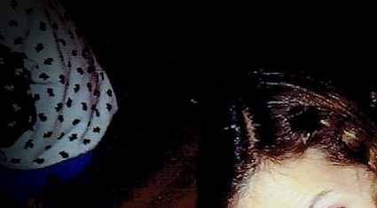
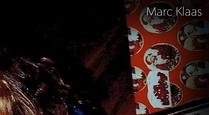
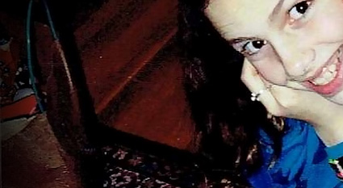
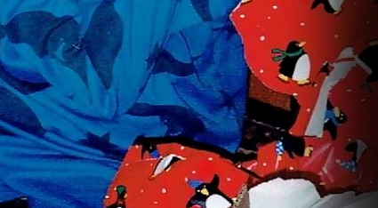
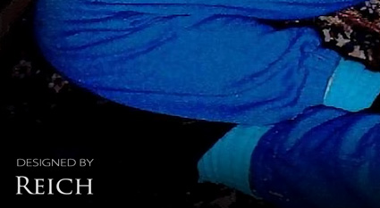
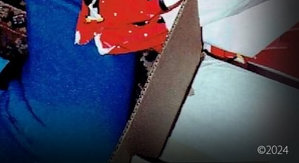
In 2019, a contact informed me that they were interviewed by the FBI for seven hours in 2006. They stated the interview was as much about Polly Klaas as JonBenet Ramsey. The FBI played numerous recorded calls from 2001 wherein I discussed Klaas in depth with an informant. The FBI stated that I had discussed details of Klaas with her killer in multiple conversations. I have a message for the FBI and Polly Klaas's killer in this October 2023 article. (Photography Designed by John Mark Karr) Visit The Disastrous Abduction that Killed Polly Klaas
Lei Sussurra
Per Simpre Vigile
Lei Sussurra was a website created by an Australian father and his Italian daughter. Lei Sussurra is an Italian phrase that translates to She Whispers. In this case, Isa was whispering secrets about JMK to her father Aidan. Although their mission was to bring me down, I did make a few statements in interviews with them that are still important today. Lei Sussurra wrote in the end: "Because of Karr's legal position in the summer of 2010 and a criminal investigation against him for alleged cult activity that followed months afterward, Lei Sussurra was virtually gagged in its response to any requests or publication of any articles to avoid further legal involvement in what had become a criminal investigation aimed not only at Karr but also at the Lei Sussurra website. Lei Sussurra is not only the focus of law enforcement. High powered law firms eye the site with negative intent as Lei Sussurra gears up for lawsuits. The site created to be a source of information about John Mark Karr has become an incriminating trap that is intimidated by threats from the outside to remain silent or pay the penalty." (Beatrice Preve / Photography Designed by John Mark Karr) Visit Lei Sussurra
Lady Amelia Windsor
Christian Dior Paris
Lady Amelia Windsor poses for a photo for Stephane Cardinale at the Christian Dior show in Paris in 2018. Amelia is the granddaughter of Prince Edward, Duke of Kent - the first cousin of the late Queen Elizabeth II. Amelia is the youngest of three siblings. She is the daughter of George Windsor, Earl of St. Andrews, and Sylvana Tomaselli, a Canadian academic and historian. She has modeled for major brands including Dolce & Gabbana and Christian Dior. She has also done some fashion collaborations as a designer. (Stephane Cardinale / Photography Designed by John Mark Karr)

 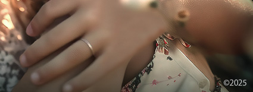
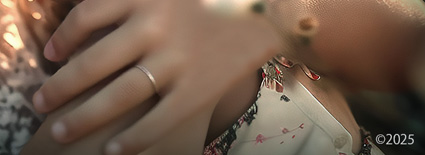


 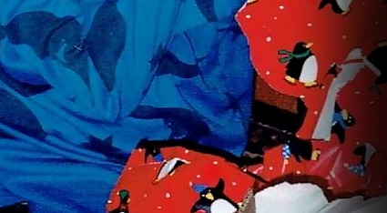
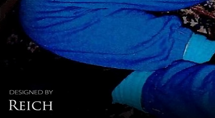
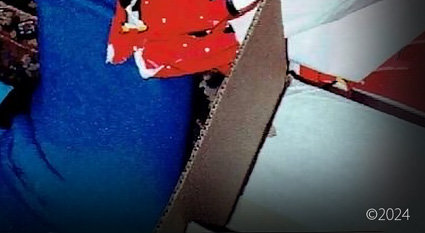
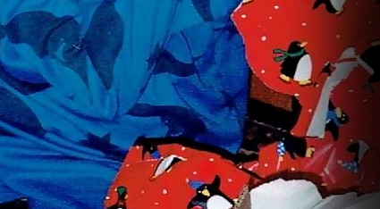
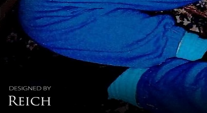
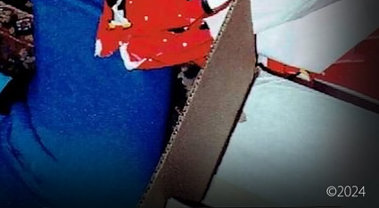